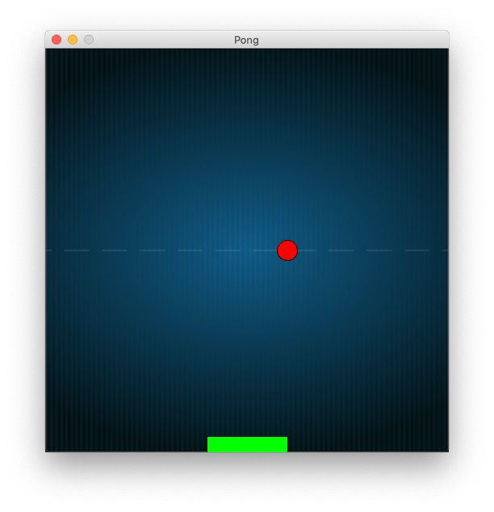

Pong

1. Start a new sketch with draw and setup methods.
2. Set your canvas size and background color in the setup method
size(width, height)
background(red, green, blue)
3. In your draw method, draw a ball on the screen.
fill(red, green, blue); stroke(red, green, blue); ellipse(x, y, width, height);
4. Make the ball move across the screen (left to right).
Hint: make a variable for the ball's X position and change it in the draw method.
5. Change the speed of the ball.
Hint: make a variable for the speed of the ball in the X direction (from left to right).
Changing this variable should change the speed of your ball.
6. Bounce the ball off the side walls. Hint: Use the value width that Processing provides.
7. Do the same for the top and bottom Hint: Use the value height that Processing provides.
8. Make a sound when the ball falls on the ground. You will need to drop a sound file (pong.wav) on your sketch. Then add the following code. Note: You may need to import the Minim library into your sketch. Ask your teacher how to do this.
At the top of the sketch:
import ddf.minim.*;
Minim minim;
AudioSample sound;
In the setup() method:
minim = new Minim (this);
sound = minim.loadSample("pong.wav", 128);
In the draw() method (when the ball hits the bottom):
sound.trigger();
9. Add a background image for your game. First drop the image file on your sketch.
At the top of the sketch:
PImage backgroundImage;
In the setup() method:
backgroundImage = loadImage("pong.png");In the draw() method:
image(backgroundImage, 0, 0);
image(backgroundImage, 0, 0, width, height);
10. Draw a paddle at the bottom of the screen
rect(x, y, width, height);
11. Make the paddle move over and back with the mouse. Hint: Use mouseX
12. Make the ball change Y direction when it hits the paddle. Figure it out by yourself, or use this method:
boolean intersects(int ballX, int ballY, int paddleX, int paddleY, int paddleLength) {
if (ballY > paddleY && ballX > paddleX && ballX < paddleX + paddleLength)
return true;
else
return false;
}